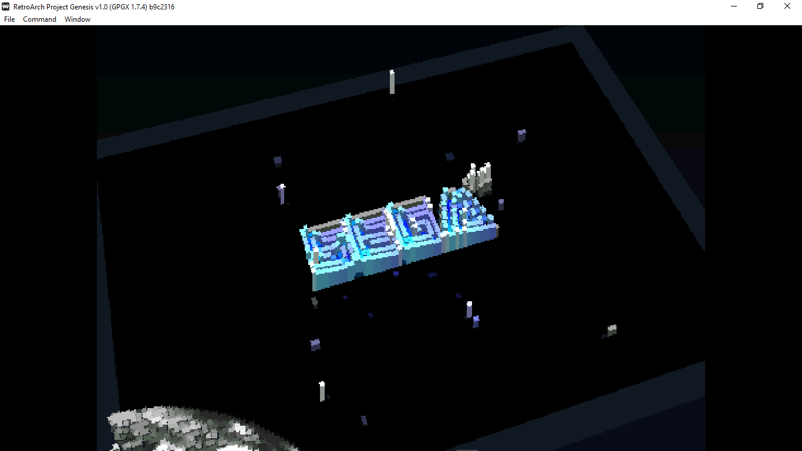
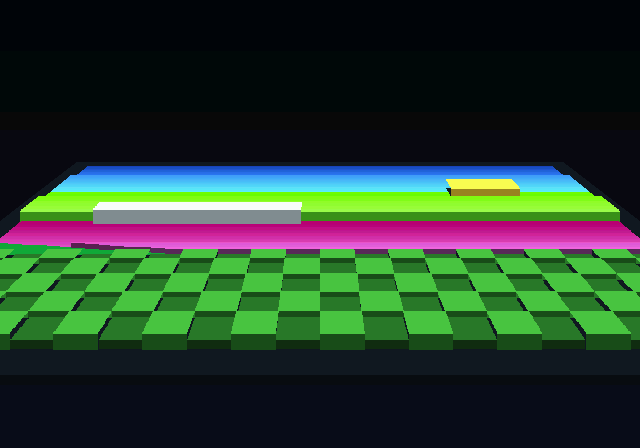
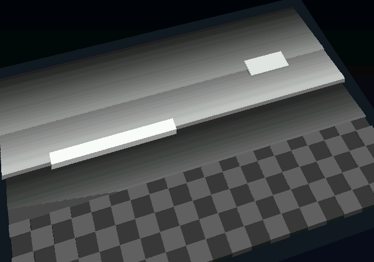

Capturas reais do RetroArch. O core Project Genesis no modo GPGX
(Sonic) e no modo PicoDrive — o mesmo renderizador, bases de emulação diferentes.
Project Genesis · modo GPGX — v1.0 (GPGX 1.7.4) b9c2316.
A tela do jogo aparece como uma laje de voxels inclinada; a borda escura ao redor do conteúdo é a borda do framebuffer de 320×224.

Modo GPGX · cena esparsa — o jogo tem muita área preta, e pixel preto vira bloco de altura zero.Project Genesis 32X · modo PicoDrive — v1.0 (PicoDrive 2.05-1890c29). Terreno, água e vegetação convertidos em blocos.
Do motor, sem o RetroArch
Renderizadas pelo próprio voxel.c, com o
harness em tests/voxel_test.c. Cada imagem usa um modo 3D, uma câmera e uma paleta diferentes.
Relevo · isométrica

Diorama · câmera baixa

Neon · paleta NoirCor p/ altura · frontal
02
Como funciona
O renderizador é, no fundo, um pós-processador de framebuffer: recebe a
imagem 2D que o emulador desenhou e devolve uma imagem 3D. Tudo em software, em C99 puro —
sem OpenGL, sem shaders, sem GPU.
flowchart LR
A["Quadro 2D RGB565 do emulador"] --> B["Amostragem média de cor saturação, contraste"]
B --> C["Altura relevo · diorama cor · plano"]
C --> D["Câmera inclinação + azimute zoom com suavização"]
D --> E["Cena fundo · chão luz direcional"]
E --> F["Desenho pintor de trás para frente"]
F --> G["Rasterização half-planes → RGB565"]
Cada bloco é um cubo com altura conforme o
brilho do pixel. As faces laterais só aparecem onde há degrau — como um relevo de verdade, e não
uma caixa para cada pixel. E a regra que explica tudo: pixel claro vira bloco alto, pixel
escuro vira nada.
03
Os dois cores
Duas arquiteturas opostas, no mesmo projeto. Um core compila o renderizador
dentro do emulador; o outro embrulha um core que já existe.
Patch nativo
Project Genesis
Um emulador Sega com o renderizador voxel compilado dentro. Duas bases de emulação,
dois modos — o mesmo core.
modo GPGX
Base Genesis Plus GX 1.7.4 (b9c2316). Mega Drive,
Mega-CD, Master System, Game Gear, SG-1000. Core de ~1 MB.
modo PicoDrive (32X)
Base PicoDrive 2.05 (1890c29). Os mesmos sistemas
+ 32X. Core de ~2,3 MB.
Os dois modos compartilham o mesmo renderizador,
as mesmas 19 opções project_genesis_* e a mesma categoria no menu do core.
Wrapper genérico
Retro8 Voxel
Não modifica emulador nenhum: carrega o core PICO-8 original com
dlopen(), repassa toda a API libretro e troca só a entrega do vídeo.
Cena com carcaça de videogame 3D — D-pad, A/B, Start/Select e ombros
Os botões afundam de verdade quando você aperta
z-buffer com rasterização de triângulos, em vez de painter's algorithm
Desempenho: o custo é proporcional ao número de células. Se o core ficar
lento no celular, reduza Tamanho do voxel para 2x ou
4x — reduz as células em 4× e 16×. Depois, baixe a resolução de saída.
07
Downloads
Arquivos da release v1.0. O pacote também traz o patch e o
script de build, para compilar do zero.
Windows: project_genesis_32x_libretro.dll para a pasta
cores do RetroArch. Linux: o .so.
Android: o .so arm64.
2
Copie o arquivo .info
Para a pasta info do RetroArch — é ele que faz o core
aparecer na lista de sugeridos.
3
Coloque as BIOS
Na pasta system: para 32X,
32X_G_BIOS.BIN, 32X_M_BIOS.BIN e
32X_S_BIOS.BIN; para Mega-CD, bios_CD_U.bin
(EUA), bios_CD_E.bin (Europa) ou bios_CD_J.bin (Japão).
4
No Retro8 Voxel
Coloque o retro8_voxel_libretro.sojunto do
retro8_libretro.so original, na mesma pasta de cores.
Sem ele, o wrapper nem inicia.
As BIOS não acompanham o pacote, por direitos autorais. Pegue-as por
conta própria e coloque na pasta system do RetroArch.
08
Documentação
A documentação completa vive no repositório — inclusive o código do patch
e um harness que renderiza cenas sem o RetroArch.